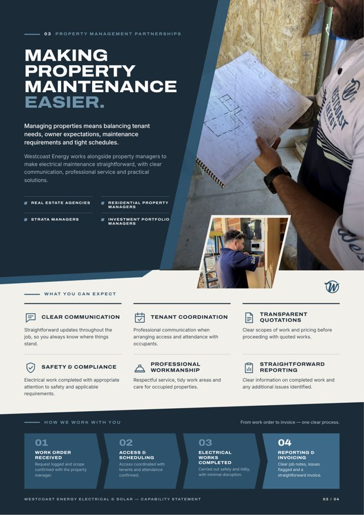
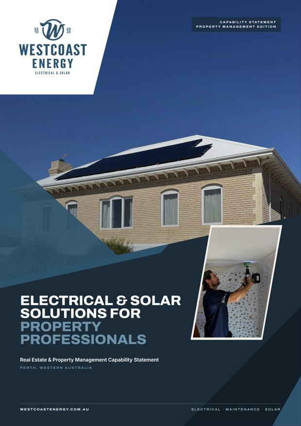
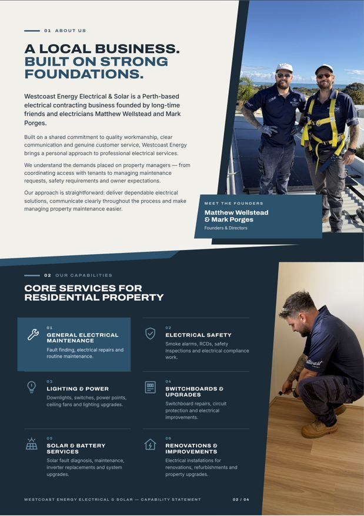
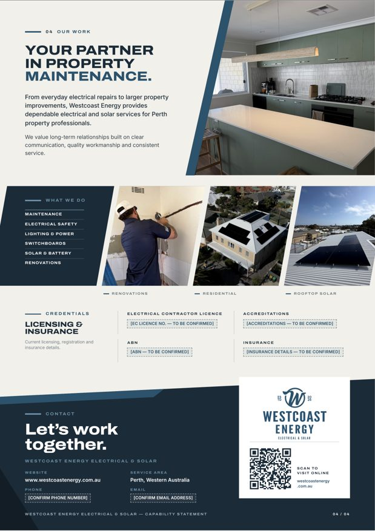

![Westcoast Energy]() Westcoast Energy capability statement
vs
Company Profile template
Westcoast Energy capability statement
vs
Company Profile template
The Westcoast capability statement measured against a company profile template
Both are printed company profiles of a similar length with the same job: introduce a business, its people and its services. The template reads as more finished because it is disciplined, not because it is busier. The gaps are measurable and they concentrate in open space, colour and system. Subject values come from the live DOM of the document; reference values come from the pixels of the supplied mockup, because a flat image has no DOM.
Summary
The three largest gaps
Pages had no room to breathe
Open paper covered a median 27% of each v1 interior page, against 64% on the template's interior pages. Near black navy covered 29 to 40% of every v1 page; the template keeps dark ink to 2% and spends colour on one block per spread.
Colour was spread everywhere
The accent appeared on all four v1 pages and site photos arrived in every hue: sage cabinets, a red lift, a yellow harness. Measured colourfulness was 32 against 14, interior medians. The template desaturates its photography so the accent carries the page.
There was no repeating system
v1 rendered 22 type sizes, headlines at 21, 27 and 21pt, and six to nine angled shapes on every page. The template repeats one header, one headline position and one grid on every page.
Interactive
Letter spacing
The heavy expanded display face needs tighter tracking as it gets larger. Drag from the v1 value to the v2 value. The reference cannot be measured here: tracking does not survive a 130 pixel wide page thumbnail.
maintenance easier.
Interactive
Open paper
The share of each page left as light neutral ground, measured from rendered pixels with the same script on both documents. Step from v1 to v2 to the template's interior median. Page three is shown because it changed the most.

Interactive
Angled geometry
Counted from the DOM: SVG polygons plus clipped elements on each page. v1 used angles as decoration on every surface, so no single angle meant anything. v2 keeps one angled photo edge per page as the brand signature, plus the cover band. The reference uses none; Westcoast keeps one because the diagonal is part of its identity.



Interactive
Accent frequency
Elements with a chromatic background or text colour, counted by the probe in the first viewport, which is one A4 page tall. The template puts colour into one deliberate block per spread: its accent covers more than two percent of a page on only 3 of its 12 interior pages.
Interactive
Type scale
Every distinct rendered size in v1, read from the live DOM and converted to points. Collapse it to the v2 scale. Three v1 sizes survive; four new steps replace the other nineteen.
Token comparison
Values side by side
Where a reference value could not be measured from the mockup it says so. v2 values are what now ships.
| Token | Westcoast v1 → v2 | Reference |
|---|---|---|
| Open paper, interior median | 27%dense → 53%v2 | 64% |
| Near black share | 29 to 40% on every pageheavy → 16 to 30%, one block per page | 2%; its solid blocks are red and cover 25 to 31% of the pages that carry one |
| Colourfulness, interior median | 32mixed hues → 21 | 14, photography in black and white |
| Accent in the first viewport | 6 elements → 2 | one red word and one mark, observed |
| Text colours | 9 → 7, one per role | not measurable from image |
| Hairlines | 12 stylessprawl → 3 by design | not measurable from image |
| Surfaces | 7 → 4 | white page, grey photo plate, one accent block |
| Type sizes | 22sprawl → 7 | not measurable from image |
| Weights | 6 → 4 by design | not measurable from image |
| Headline size, interior | 21, 27, 21ptvaries → 26pt on every page | one size, observed |
| Headline position | moves per page → 25mm from top, left column | fixed top left, observed |
| Running header | footer on navy only → header on pages 2 to 4 | header on every page, observed |
| Display tracking | -0.005em → -0.010em | not measurable from image |
| Angled shapes per page | 6 to 9decorative → 1 | 0 |
| Grid | none → 12 columns, 16mm margins, 4mm gutters | two columns per page, observed |
| Radii | 0 → 0, plus round icon badges | square photos, round icon badges, observed |
Click any swatch to copy its hex.
Design decisions
Three changes that need a call from you
Muted colour, or black and white photography
The template's photos are black and white, which is the single biggest reason its pages feel calm. v2 stops short of that: photos keep their colour at about 60 percent saturation with a cool navy cast in the shadows. That brings colourfulness from 32 to 21 while keeping the real feel of finished work, which matters when property managers judge workmanship. Going fully monochrome would land near the template's 14.
A bold photographic cover, not a white one
The template's cover is almost entirely white. Your original brief set the TradiePacks reference as the benchmark for impact, so v2 keeps a full photographic cover with the white logo, and applies the discipline instead: one diagonal, one brand band, no overlays. If you prefer the quieter direction, the cover is the one page to change.
Navy carries the solid block, where the template uses red
The dark share on pages three and four stays near 30 percent because each page's one solid block is navy. That matches the template's discipline (its red blocks cover 25 to 31 percent of their pages) while keeping your brand colours. A lighter brand blue block would read as less dark, at the cost of contrast for white text.
Token patch
The v2 design tokens
These now live at the top of src/styles.css. Brand colours are unchanged; the rest replaces the sprawl measured in v1.
/* brand, unchanged */ --brand: #2C526C; --navy: #1B2B38; --paper: #F2F0EA; /* text roles: four on paper, three on navy (was nine values) */ --t-head: #1B2B38; --t-body: #3A4853; --t-mute: #6E7C86; /* plus --brand for labels */ --d-head: #FFFFFF; --d-body: #B4C3CC; --d-label: #8FB0C4; /* hairlines: two (was twelve) */ --rule: #D3D5CF; /* on paper */ --rule-d: rgba(255,255,255,.16); /* on navy */ /* type: seven sizes (was twenty two) */ --fs-cover: 34pt; --fs-display: 26pt; --fs-h3: 12pt; --fs-lead: 10pt; --fs-body: 8.6pt; --fs-small: 7.4pt; --fs-label: 6.2pt; /* grid */ --m: 16mm; --col: 11.1667mm; --gut: 4mm; /* 12 columns */ /* photo grade, scripts/prepare-photos.py */ saturation: 0.62; contrast: 1.06; shadow cast: #1B2B38 at 16%;
Priority order
Ordered by visible effect per hour
Every row below is applied in v2. Mechanical rows are find and replace work; decision rows needed a choice about what the thing should be. Click to tick them off as you review.
- Collapse type to seven sizes and four weights, one headline size on every interior pagemechanical · 1 hr · largest effect
- Map text to seven colour roles and hairlines to twomechanical · 30 min
- Give pages 2 to 4 one running header and one headline slotmechanical · 1 hr
- Remove decorative polygons, keep one angled photo edge per pagedecision · 2 hrs
- One navy block per page; move the rest of each page to open paper on a 12 column griddecision · half a day
- Grade all photos as one muted seriesdecision · 1 hr
- Use the supplied white logo on the cover and contact blockmechanical · 20 min
0 of 7 done